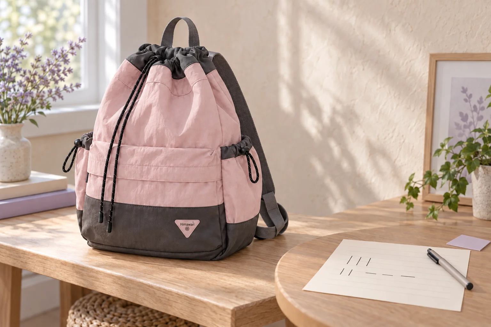

손글씨 연습지를 챙길 때: 다음 줄에서 고칠 한 자리

손글씨 연습을 하러 나가는 날, 새 종이만 챙기면 지난번에 무엇을 고치고 싶었는지 다시 떠올려야 합니다. 잘 쓴 줄을 찾는 대신 다음에 다시 볼 자리 하나를 표시해보세요. 오늘의 도구와 함께 이전 연습지 한 장을 가져가는 이유가 분명해집니다.
전체 평점 대신 눈에 걸린 자리 하나
자기가 쓴 종이를 보고 마음에 드는 부분과 다시 보고 싶은 부분을 각각 한 곳만 고릅니다. 글자 하나의 모양일 수도 있고 두 글자 사이의 간격일 수도 있습니다. ‘글씨가 전부 이상하다’처럼 넓게 평가하기보다 어느 줄의 어떤 자리를 말하는지 짚어보세요. 종이에 표시하고 싶지 않다면 작은 별도 메모에 줄 번호와 확인할 부분을 적을 수 있습니다. 다른 사람이 쓴 글씨의 평가나 교정을 대신하는 일이 아니라 자신의 연습을 이어가는 기록입니다.
다음 줄에서는 한 가지부터 바꿔보기
글자 크기와 간격, 기울기를 동시에 바꾸기보다 오늘 확인할 항목 하나를 고릅니다. 간격을 보고 싶다면 같은 짧은 낱말을 다시 써보고 어느 부분을 다르게 썼는지 비교해보세요. 반드시 일정한 비율이나 특정 글씨체를 따라야 한다는 뜻은 아닙니다. 자신이 읽기 편한 상태를 찾는 작은 시도입니다. 여러 항목을 고치고 싶다면 지금 연습할 하나와 다음에 볼 것을 나눠 적어두면 오늘의 목표를 다시 찾을 수 있습니다.
비교할 두 줄에는 사용한 조건도 남기기
지난 종이와 새 종이의 느낌이 다르면 무엇을 바꿨는지 함께 적어둡니다. 펜이나 종이를 바꾼 경우 그 사실을 짧게 표시하고, 지난 줄과 같은 조건이었다고 단정하지 않습니다. 이 글은 도구별 결과를 비교하는 실험이나 전문 교정법을 제시하지 않습니다. 단순히 다음에 종이를 펼쳤을 때 그날의 시도를 기억할 단서를 남기는 방식입니다. 연습 장소에서 따로 사용하는 안내가 있다면 그 기준에 맞춰 기록하세요.
지난 연습지와 새 종이를 구분해 챙기기
표시한 이전 종이는 비교할 자료, 빈 종이는 오늘 쓸 자료로 나눠 둡니다. 필기구를 종이 사이에 끼운 채 접지 않고 별도 자리에 정리하세요. 귀가한 뒤에는 다음에 확인할 자리 하나를 새로 고르고, 이전 목표와 같은 것인지 살펴봅니다. 사진 속 No.0513의 분홍 몸체와 짙은 배색, 삼각형 로고와 스트링은 실제 원본을 참고했습니다. 외부 치수는 종이나 필통이 특정 포켓에 들어간다는 근거가 아니므로 사용하는 커버를 포함한 크기는 실제 제품과 대조해주세요.
참고·안내
- Himawari No.0513 제품 정보
- 실제 Himawari No.0513 핑크 원본과 제조사 카탈로그 외부 치수 30 × 43 × 15 cm를 참고한 AI 연출 사진입니다. 종이의 단순한 획과 필기구는 가상 소품이며 실제 수업 결과나 수납 실측 예시가 아닙니다.
자주 묻는 질문
연습한 종이를 모두 가져가야 하나요?
오늘 다시 볼 자리와 연결되는 종이 한 장부터 고를 수 있습니다. 빈 종이와 구분해 놓으면 연습을 시작할 때 비교할 자료를 찾기 쉽습니다.
크기와 간격을 한꺼번에 고치면 안 되나요?
정해진 금지 사항은 아닙니다. 다만 이번에 무엇을 바꿨는지 기억하고 싶다면 한 가지부터 시도하고 나머지는 다음 목표로 남겨볼 수 있습니다.